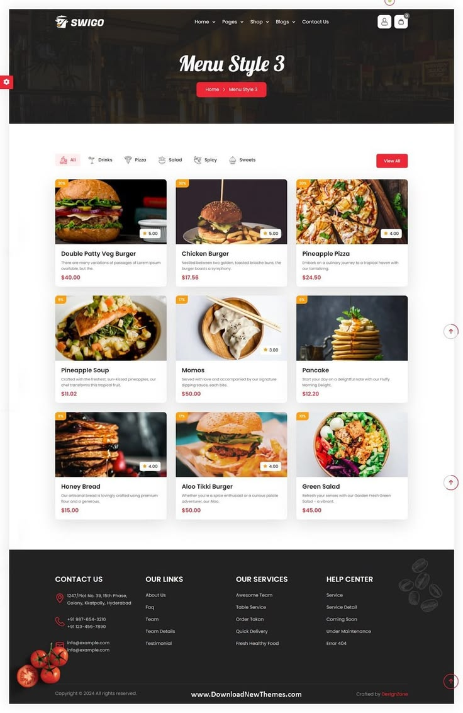
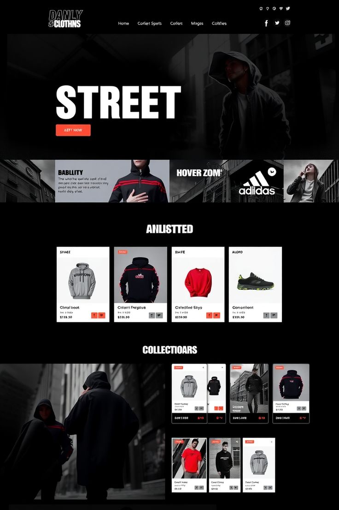

STATUS: ONLINE
Soluções Digitais

Engenharia de Performance
Desenvolvo sites focados em conversão real. Uso HTML5, CSS3 e JavaScript puro para garantir que seu projeto seja rápido e eficiente.
Projetos Desenvolvidos

